31 cocktails
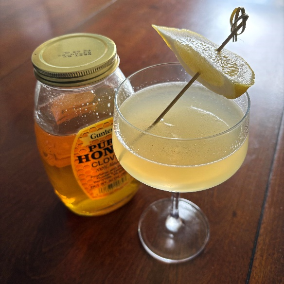
Ingredients
- 2 oz London dry gin
- 1 oz honey syrup
- 1 oz lemon juice
- Lemon wedge (garnish)
Method
Pour lemon juice, honey syrup, and gin into a shaker. Crack ice and shake until well chilled.
Pour into a chilled coupe glass. Garnish with a skewered lemon wedge.
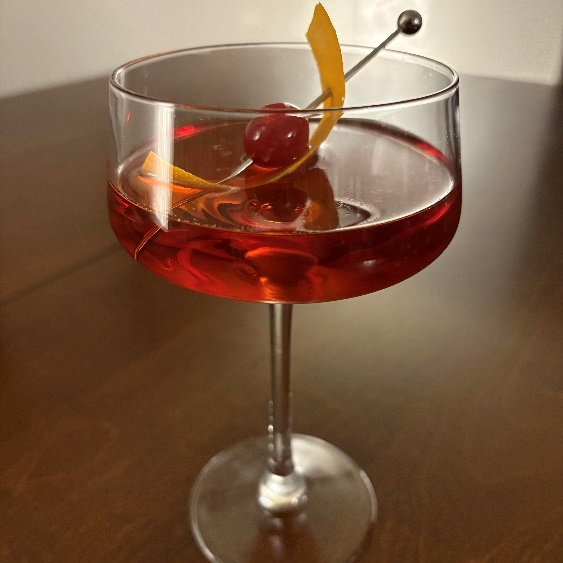
Ingredients
- 2 oz bourbon
- 1½ oz sweet vermouth
- 1½ oz Aperol or Campari
- Orange peel & maraschino cherry (garnish)
Method
Pour vermouth, Aperol, and bourbon into a mixing glass. Add cracked ice and stir until well chilled.
Pour into a chilled coupe. Express the orange peel and garnish with it and a cherry.
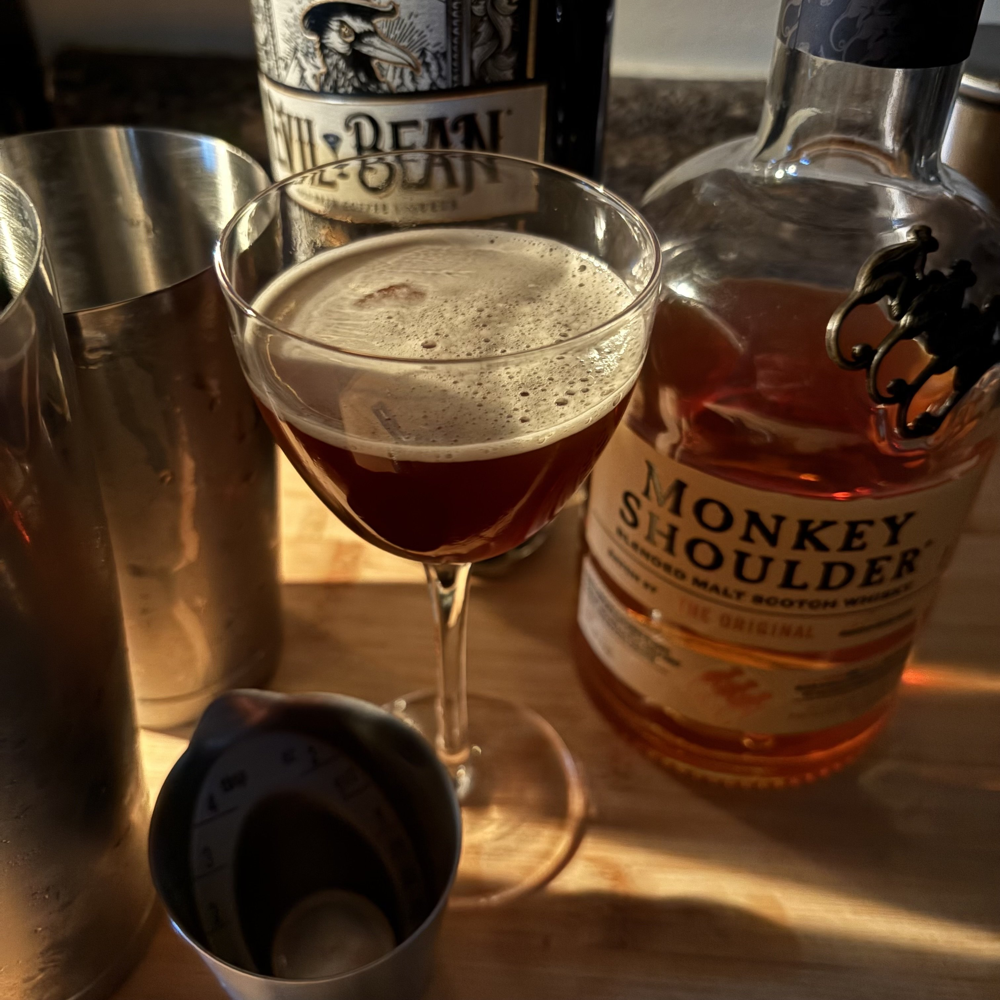
Ingredients
- 1¼ oz Licor 43
- ¾ oz coffee liqueur
- ½ oz blended scotch
- Pinch of salt
Method
Combine all ingredients in a shaker. Add ice and shake until well chilled.
Strain into a chilled Nick & Nora glass.
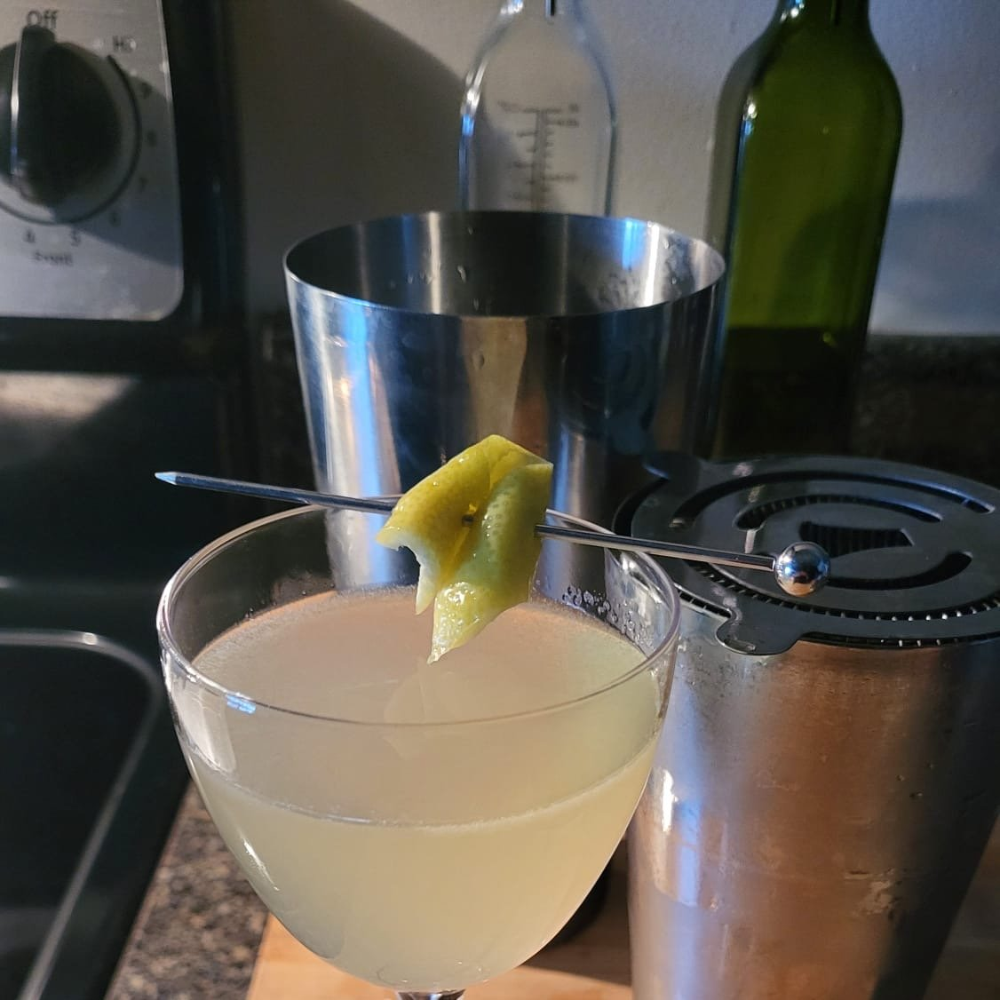
Ingredients
- ¾ oz gin
- ¾ oz dry curaçao
- ¾ oz Cocchi Americano
- ¾ oz lemon juice
- Absinthe (for rinse)
- Lemon peel (garnish)
Method
Spritz the inside of a chilled Nick & Nora glass with absinthe and set aside.
Combine remaining ingredients in a shaker. Add ice and shake until well chilled. Strain into the prepared glass and garnish with a lemon peel.
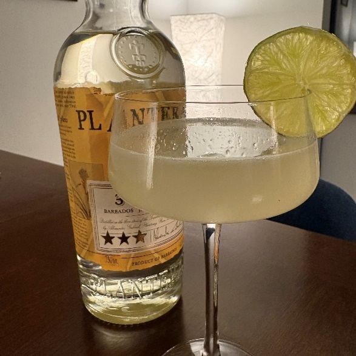
Ingredients
- 2 oz light rum
- 1 oz lime juice
- 1 oz simple syrup
- Lime wheel (garnish)
Method
Pour lime juice, simple syrup, and rum into a shaker. Crack ice and shake until well chilled.
Pour into a chilled coupe glass. Garnish with a lime wheel.
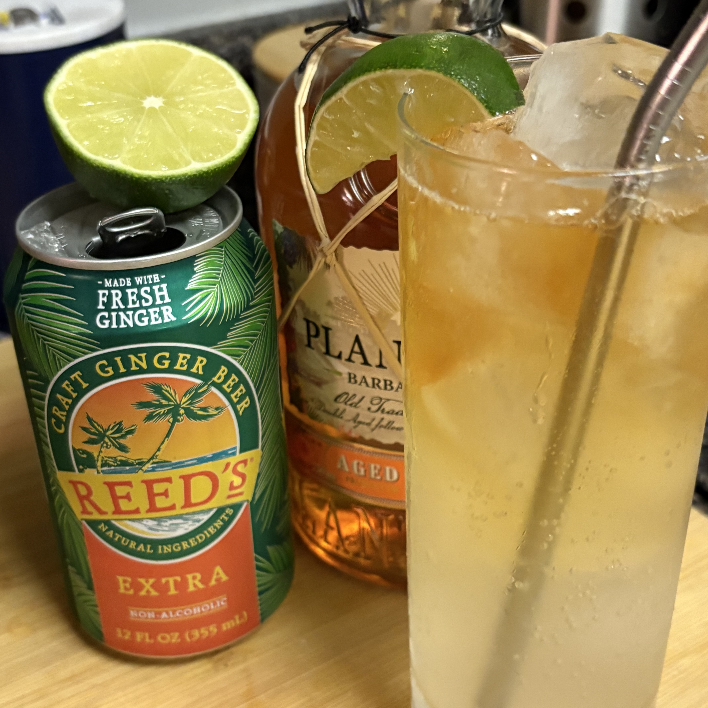
Ingredients
- 2 oz dark rum
- 4 oz ginger beer
- ½ oz lime juice
- Lime wedge (garnish)
Method
Fill a highball glass with ice. Pour in lime juice and ginger beer, then float the dark rum on top by pouring it slowly over the back of a bar spoon.
Garnish with a lime wedge. Stir before drinking.
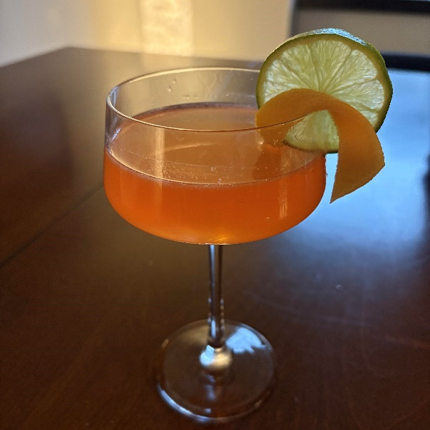
Ingredients
- 1 oz mezcal
- ¾ oz Aperol
- ½ oz Maraschino liqueur
- ¾ oz lime juice
- Lime round & grapefruit peel (garnish)
Method
Pour liquid ingredients into a shaker. Add ice and shake until chilled.
Pour into a chilled coupe. Express the grapefruit peel and garnish with it and a lime round.
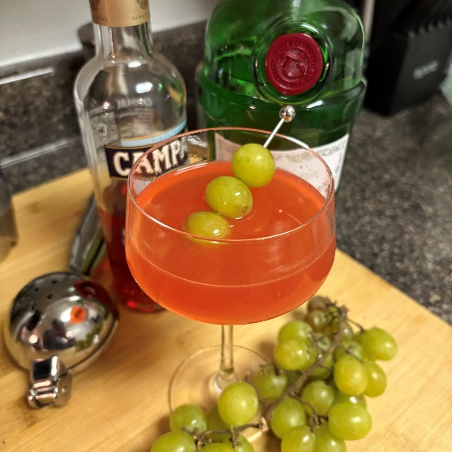
Ingredients
- 5 seedless green grapes (plus 3 for garnish)
- 1 oz dry gin
- 1 oz Campari
- ¾ oz lemon juice
- ½ oz simple syrup
Method
Place grapes in a shaker and muddle. Add liquid ingredients, then ice, and shake until chilled.
Pour into a chilled coupe and garnish with spare grapes.
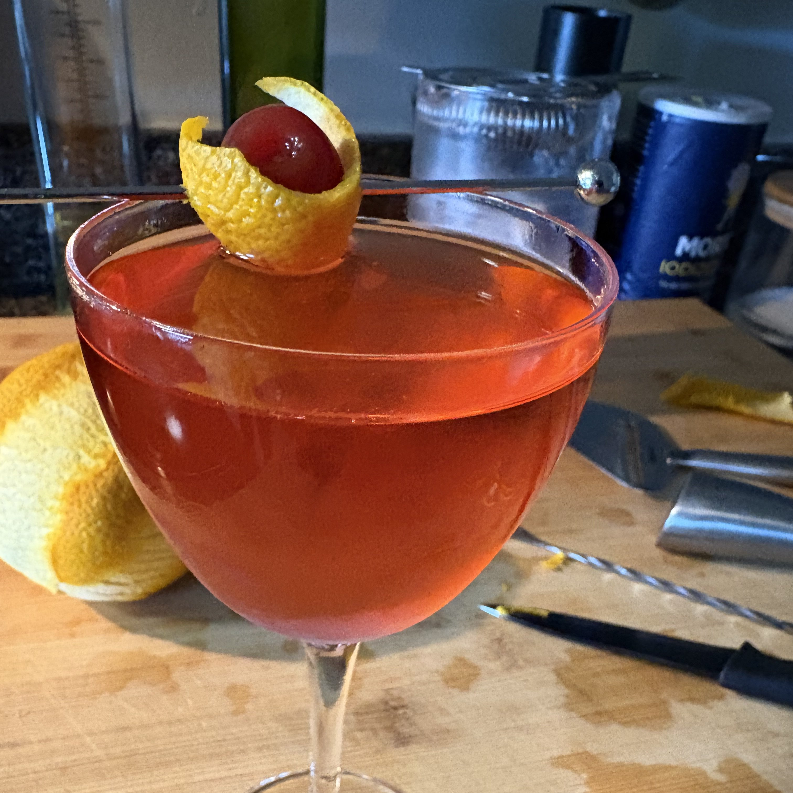
Ingredients
- 1½ oz rum
- 1½ oz blanc vermouth
- ¼ oz dry curaçao
- 1 barspoon grenadine
- Orange twist (garnish)
Method
Combine all ingredients in a mixing glass. Add cracked ice and stir until well chilled.
Strain into a chilled coupe. Express the orange twist and garnish.
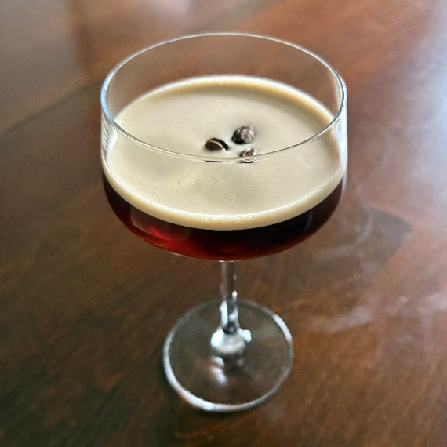
Ingredients
- 2 oz vodka
- ½ oz coffee liqueur
- ½ oz simple syrup
- 1 double shot of espresso
- 3 whole coffee beans (garnish)
Method
Pour espresso, simple syrup, coffee liqueur, and vodka into a shaker. Add cracked ice and shake until well chilled.
Strain out the ice, then dry shake again vigorously to build the foam.
Pour into a chilled coupe and garnish with coffee beans.
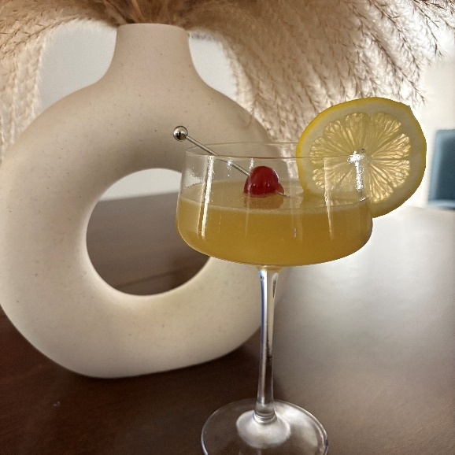
Ingredients
- ¾ oz rye
- ¾ oz green Chartreuse
- ¾ oz Maraschino liqueur
- ¾ oz lemon juice
- Lemon round & maraschino cherry (garnish)
Method
Combine liquid ingredients in a shaker. Add ice and shake until chilled.
Pour into a chilled coupe and garnish with a lemon round and skewered cherry.
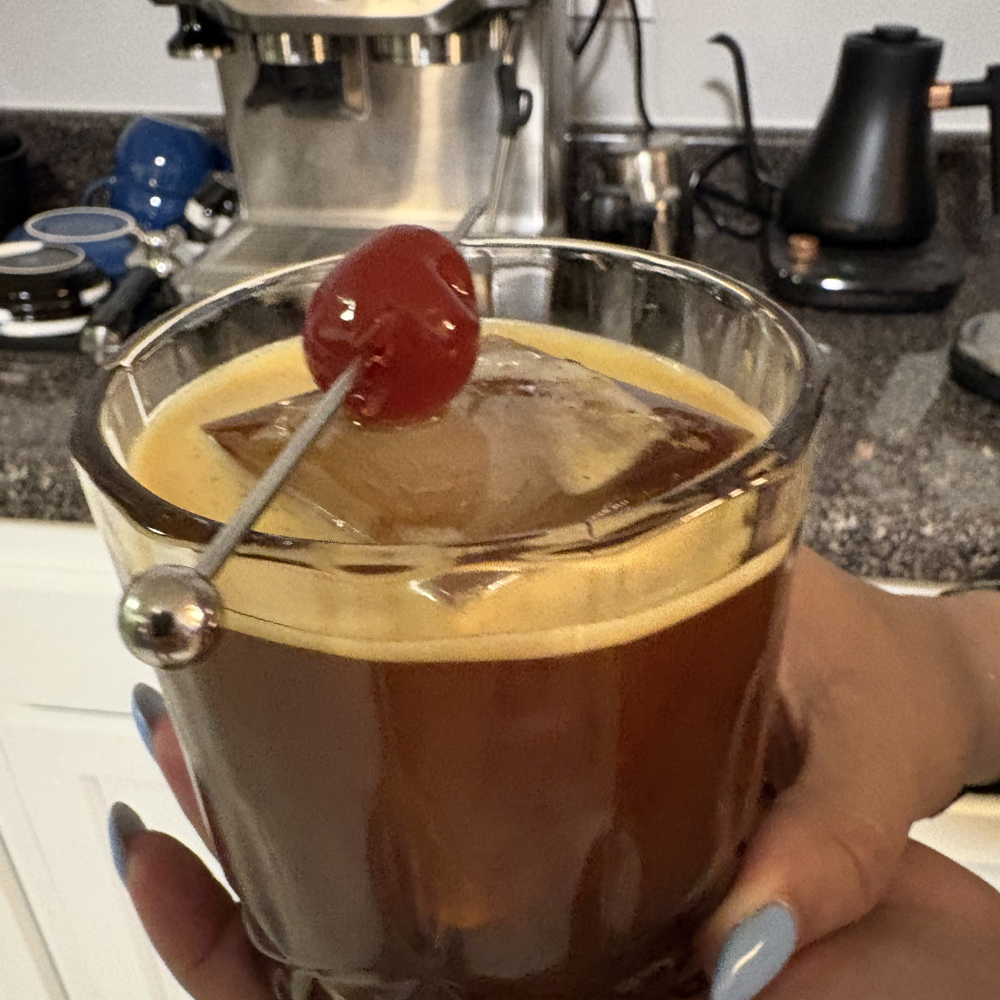
Ingredients
- 1 double shot of espresso
- 1 oz Licor 43
- 1 oz bourbon
- ½ oz banana liqueur
- Maraschino cherry (garnish)
Method
Combine all ingredients in a shaker. Add ice and shake until well chilled.
Strain into a rocks glass over a large ice cube. Garnish with a maraschino cherry.
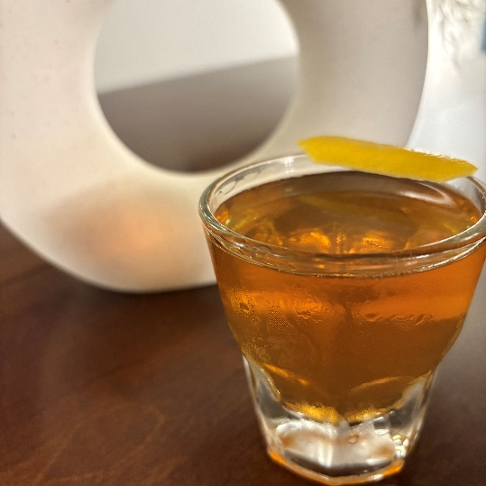
Ingredients
- 2 oz rye
- 2 dashes Peychaud's bitters
- 2 dashes Angostura bitters
- ¼ oz simple syrup
- ¼ oz Maraschino liqueur
- Absinthe (for rinse)
- Lemon peel (garnish)
Method
Pour liquid ingredients into a mixing glass. Add cracked ice and stir until chilled.
Spritz inside of a chilled Gibraltar glass with absinthe. Strain the drink in. Express lemon peel and garnish.
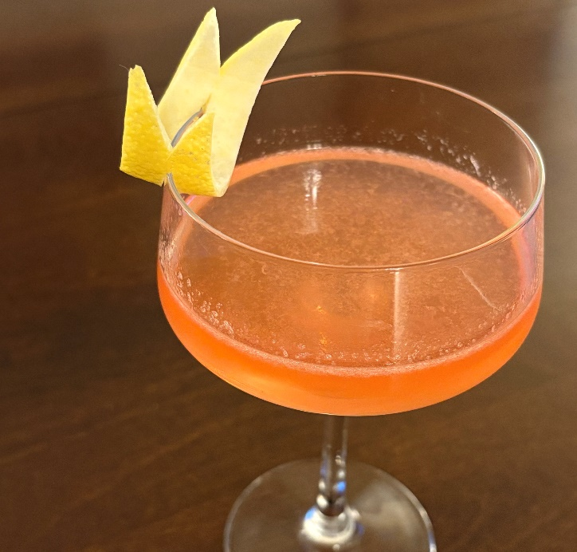
Ingredients
- 1½ oz London dry gin
- ¼ oz dry curaçao
- ¼ oz Campari
- ¾ oz lemon juice
- Lemon peel (garnish)
Method
Pour liquid ingredients into a shaker. Add ice and shake until chilled.
Pour into a chilled coupe. Express lemon peel and garnish with it.
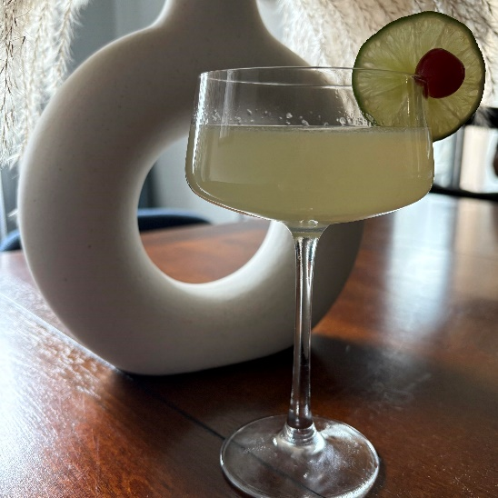
Ingredients
- ¾ oz London dry gin
- ¾ oz green Chartreuse
- ¾ oz Maraschino liqueur
- ¾ oz lime juice
- Lime round & maraschino cherry (garnish)
Method
Pour liquid ingredients into a shaker. Add ice and shake until chilled.
Pour into a chilled coupe and garnish with a lime round and cherry.
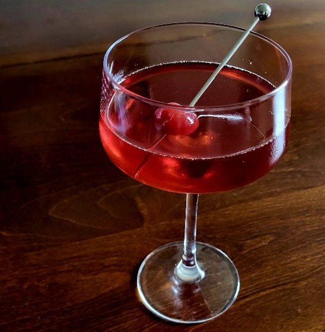
Ingredients
- 1½ oz bourbon
- ¾ oz sweet vermouth
- ¾ oz Campari
- 4 dashes chocolate bitters
- Maraschino cherry (garnish)
Method
Pour bourbon, vermouth, Campari, and bitters into a mixing glass. Add cracked ice and stir until chilled.
Pour into a chilled coupe. Garnish with a skewered maraschino cherry.
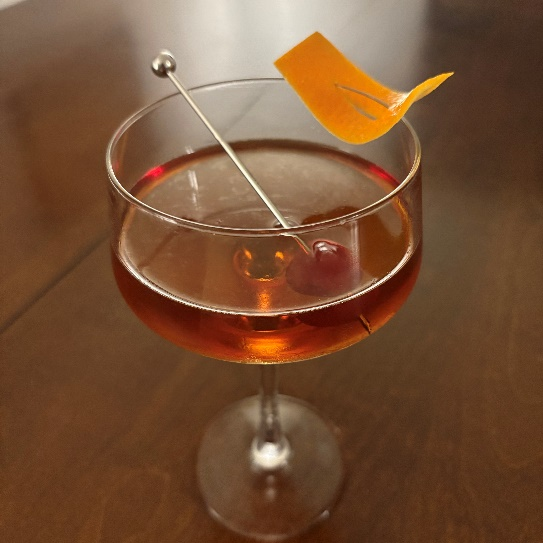
Ingredients
- 2 oz rye
- 1 oz sweet vermouth
- 2 dashes Angostura bitters
- Orange peel & maraschino cherry (garnish)
Method
Pour vermouth, rye, and bitters into a mixing glass. Add cracked ice and stir until chilled.
Pour into a chilled coupe. Express orange peel and garnish with it and a cherry.
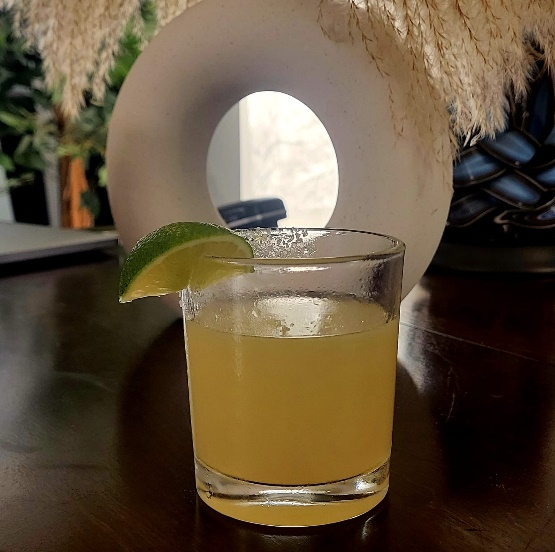
Ingredients
- 2 oz tequila
- 1 oz dry curaçao
- 1 oz lime juice
- Lime wedge & salt (garnish)
Method
Pour liquid ingredients into a shaker. Add ice and shake until chilled.
Rub the outer rim of a chilled small whiskey glass with lime, then run through kosher salt. Pour in drink and garnish with lime wedge.
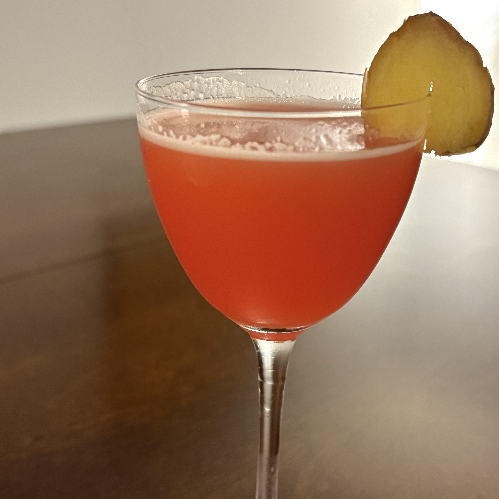
Ingredients
- ¾ oz mezcal
- ¾ oz Campari
- ¾ oz ginger syrup
- ¾ oz lemon juice
- Pinch of salt
- Candied ginger or ginger slice (garnish)
Method
Combine all ingredients in a shaker. Add ice and shake until well chilled.
Strain into a chilled Nick & Nora glass. Garnish with candied ginger or a fresh ginger slice.
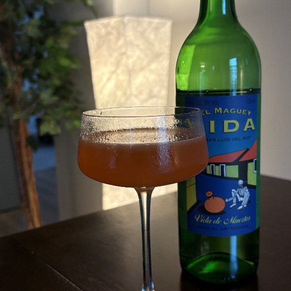
Ingredients
- ¾ oz mezcal
- ¾ oz yellow Chartreuse
- ¾ oz Aperol
- ¾ oz lemon juice
Method
Pour liquid ingredients into a shaker. Add ice and shake until chilled.
Pour into a chilled coupe glass.
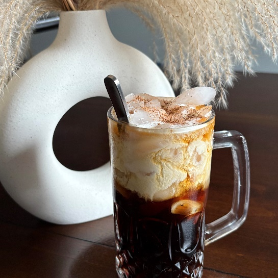
Ingredients
- 1½ oz dark rum
- 1 oz coffee liqueur
- 3 oz root beer
- Float of heavy cream
- Ground nutmeg (garnish)
Method
Pour coffee liqueur and rum into a highball or glass mug. Fill with ice.
Pour in root beer. Top with a heavy cream float by pouring cream over a bar spoon onto the ice. Sprinkle with ground nutmeg.
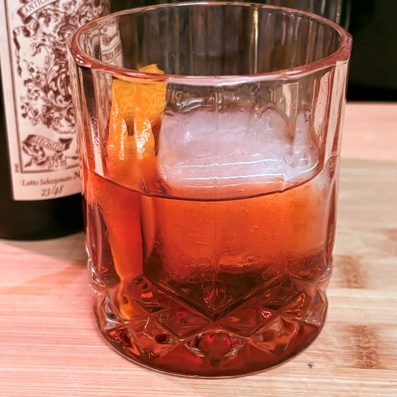
Ingredients
- 1 oz gin
- 1 oz sweet vermouth
- 1 oz Aperol
- Orange peel (garnish)
Method
Place a large ice cube in a whisky glass. Pour in gin, vermouth, and Aperol. Stir until chilled.
Express the orange peel and garnish.
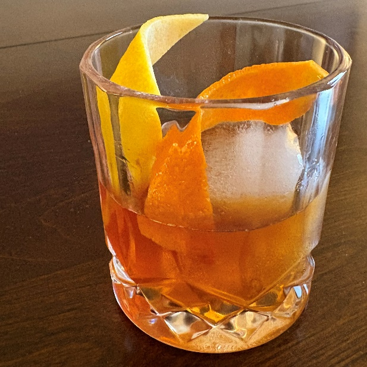
Ingredients
- 2 oz bourbon
- 2 dashes Angostura bitters
- ¼ oz demerara syrup
- Lemon peel & orange peel (garnish)
Method
Place liquid ingredients directly in a whiskey glass. Add a large ice cube and stir to chill.
Express both peels and garnish.
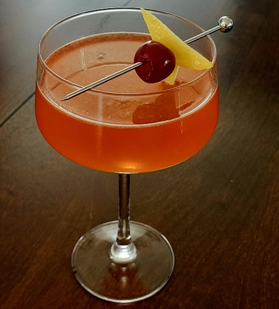
Ingredients
- ¾ oz bourbon
- ¾ oz Aperol
- ¾ oz Amaro Nonino
- ¾ oz lemon juice
- Lemon peel & maraschino cherry (garnish)
Method
Combine ingredients in a shaker. Add cracked ice and shake until chilled.
Pour into a chilled coupe and garnish with lemon peel and a cherry.
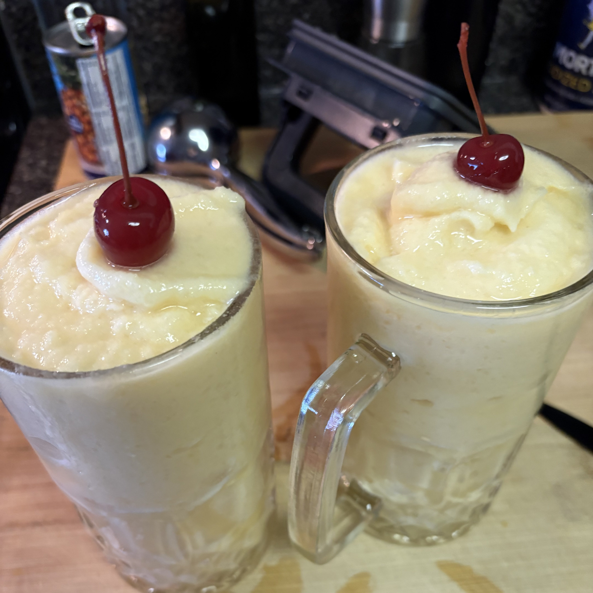
Ingredients
- 450g frozen pineapple chunks
- 250g ice
- 3 oz crème of coconut
- 3 oz pineapple juice
- 2 oz white rum
- 2 oz Jamaican rum
- 1 oz fresh lime juice
- 4 dashes Angostura bitters
- Maraschino cherries (garnish)
Method
Combine all ingredients in a blender and blend until smooth and frappéd.
Let the mixture rest for 5 minutes — this allows it to thicken slightly. Pour into chilled mugs or glasses and garnish with cherries.
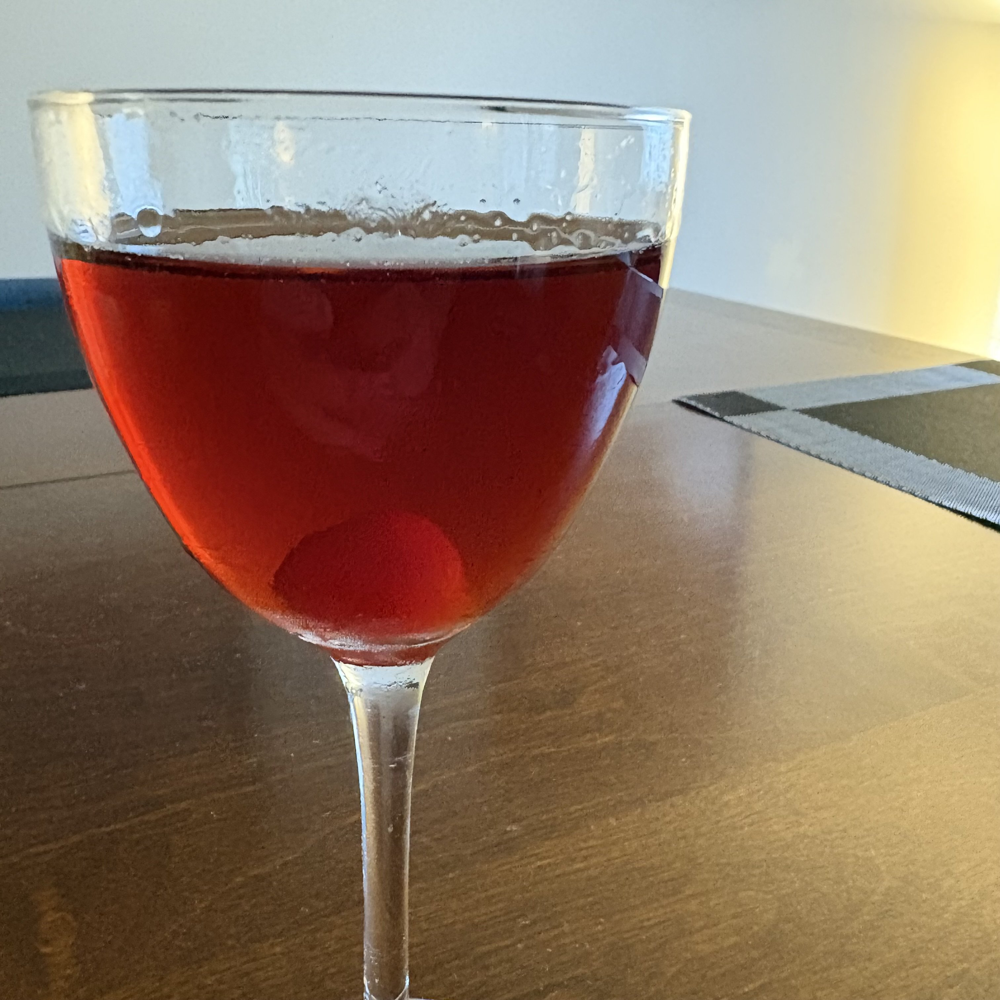
Ingredients
- 1½ oz cognac
- 1½ oz sweet vermouth
- ¼ oz dry curaçao
- 1 dash Angostura bitters
- Maraschino cherry (garnish)
Method
Combine all ingredients in a mixing glass. Add cracked ice and stir until well chilled.
Strain into a chilled Nick & Nora glass. Drop a cherry directly into the drink.
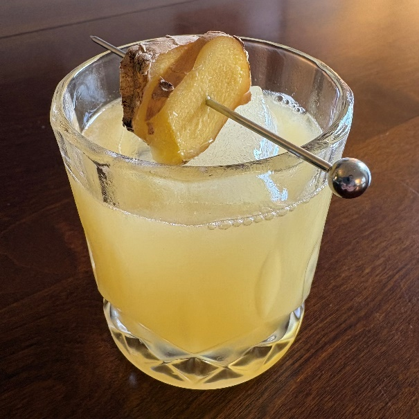
Ingredients
- 2 oz blended scotch
- ¾ oz lemon juice
- ½ oz honey syrup
- ½ oz ginger syrup
- ½ oz Islay single malt (float)
- Candied or sliced ginger (garnish)
Method
Pour blended scotch, lemon juice, honey syrup, and ginger syrup into a shaker. Add cracked ice and shake well.
Add a large ice cube to a whiskey glass. Strain in the cocktail. Float the Islay scotch on top. Garnish with ginger.
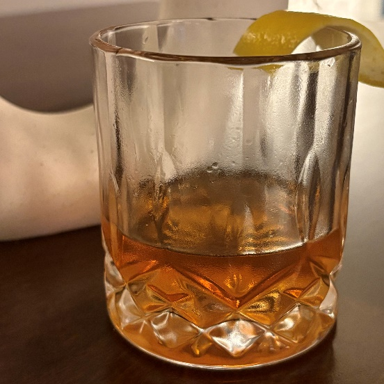
Ingredients
- 2 oz rye
- 4 dashes Peychaud's bitters
- 2 barspoons simple syrup
- Absinthe (for rinse)
- Lemon peel (garnish)
Method
Pour simple syrup, bitters, and rye into a mixing glass. Add cracked ice and stir until chilled.
Spritz inside of a chilled whiskey glass with absinthe. Strain in the drink. Express lemon peel and garnish.
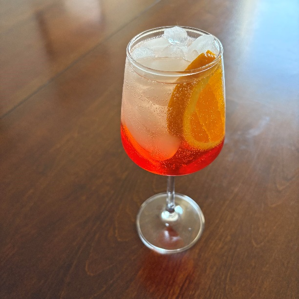
Ingredients
- 2 oz Aperol
- 3 oz prosecco
- 1 oz club soda
- Orange slice & peel (garnish)
Method
Fill a wine glass with cracked ice. Press an orange slice firmly against the side of the glass.
Pour Aperol, prosecco, and club soda gently to keep distinct layers. Express the orange peel, then discard.
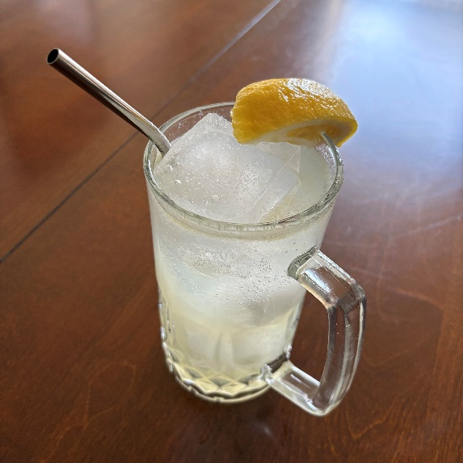
Ingredients
- 2 oz gin
- 1 oz lemon juice
- ½ oz simple syrup
- Club soda (to top)
- Lemon wedge (garnish)
Method
Place ice cubes in a highball. Pour in lemon juice, simple syrup, and gin. Stir briefly.
Top with club soda. Garnish with a lemon wedge.
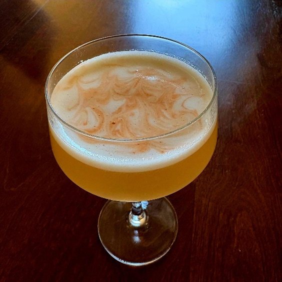
Ingredients
- 2 oz bourbon
- 1 oz lemon juice
- 1 oz simple syrup
- White of 1 egg
- 3 dashes Angostura bitters (garnish)
Method
Pour lemon juice, simple syrup, bourbon, and egg white into a shaker. Dry shake until frothy.
Add cracked ice and shake again until well chilled and frothy. Double strain into a chilled coupe.
Add three dashes of Angostura bitters on the foam and use a toothpick to create a design.
No cocktails found. Try another search.